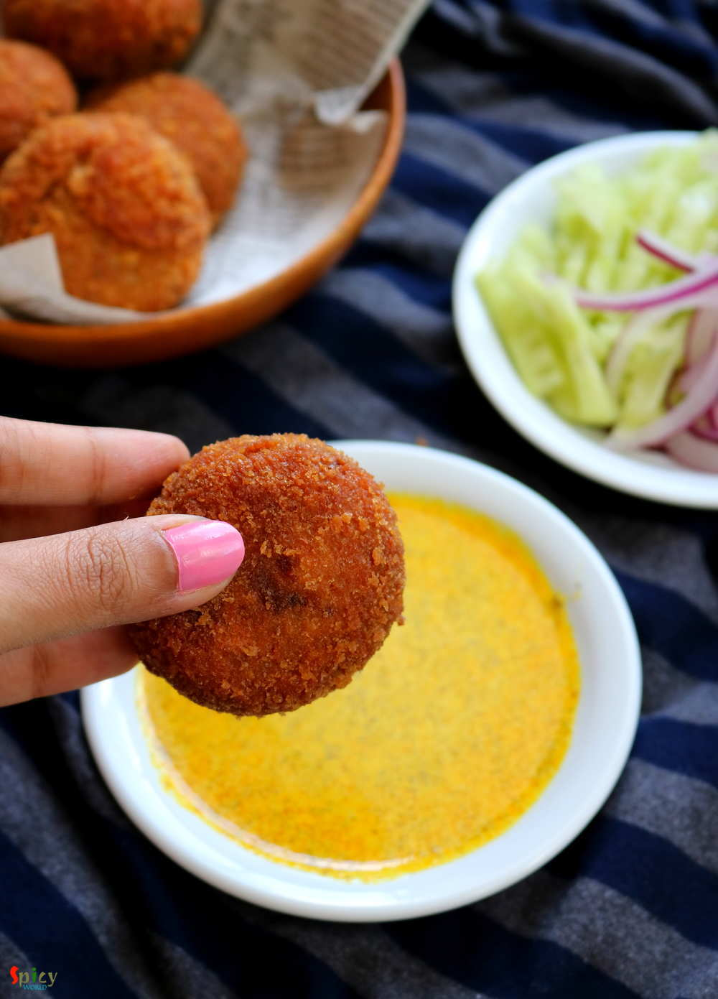

Simple and Easy Recipes
Macher Chop / Fish Croquettes / Fish Chop
© 2016 Spicy World, Published on: Jun 13, 2016
We, Bengalis, love to eat fish in many forms. One of the popular snack of West Bengal is 'macher chop'. Spicy crumbled fish inside and crispy coating outside - scrumptious !! We both usually enjoy this snack in the evening along with a cup of tea or with a can of beer. Both combos are unbeatable. If you have to impress any Bengali ever in your life, just indulge him/her in 'Bikeler adda' (evening gossip), 'a cup of tea', Macher chop' and 'Rabindra sangeet'. I can gurantee he/she will request you to arrange another meeting soon ?. Try this in your kitchen and enjoy a special evening with your loved ones.

Ingredients
- 300 grams of fish fillets
- 1 boiled potato.
- 1 egg.
- Bread crumbs.
- 2 green chilies, chopped.
- 1 Teaspoon of ginger garlic and green chili paste.
- Small onion finely chopped.
- Spice powder (1 Teaspoon of turmeric powder, 2 Teaspoons of roasted cumin and coriander powder, 1 Teaspoon of red chili powder).
- Salt and pinch of sugar.
- Some chopped coriander leaves.
- 4 Tablespoons of mustard oil.
- White oil for deep fry.
- Half Teaspoon of each (garam masala powder, chaat masala powder).


Steps
Rub the fish fillets with turmeric powder and some salt. Keep it for 10 minutes. You can also use with bone fishes like Rohu.
Heat the mustard oil in a pan.
Add the fish in hot oil and fry each side for 2 minutes. Remove those in a plate and crumble them with a fork. Do not make them mushy. If you are using with bone fishes then at this point discard the bones and skin, rest of the process will be same.
In the remaining oil, add chopped onion. Fry for 5 minutes.
Then add ginger garlic and green chili paste. Cook for 2 minutes.
Add all the spice powder and salt. Mix well.
Add the crumbled fish and mashed potato. Mix this very well for 4 minutes.
Add some salt and pinch of sugar. Mix well. Then add garam masala powder and chaat masala. Mix well for 2 minutes.
Lastly add chopped coriander leaves and green chilies. Mix well and turn off the heat.
Let this mixture come to room temperature.
Then make some small patties out of the mixture. You can give them any shape.
Take a bowl. Beat an egg with pinch of salt.
Now dip one patty in the beaten egg and then roll it in bread crumbs.
Again dip it in the egg and coat it with bread crumbs.
Let those coated patties rest for 15 minutes in the fridge.
Then fry those one by one in hot white oil for 3-4 minutes.
Remove them in a tissue paper.
Your macher chop is ready.
Serve hot with salad and kasundi.
")